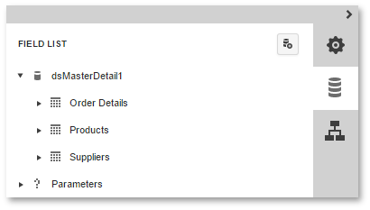
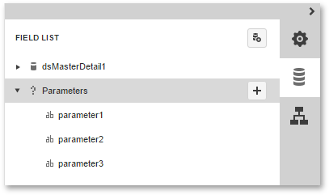

Field List
This document describes the Field List panel that enables you to explore and manage report data sources and parameters.

This document consists of the following sections.
Manage Report Data Sources
The Field List lists available report data sources and displays their structure. Dragging a field from the Field List onto the Design Surface creates a new Label bound to that data field.

The following actions are available in the Field List for data source customization.
| Button | Description |
|---|---|
| Removes the selected data source. | |
 |
Invokes the Master-Detail Relation Editor. |
 |
Invokes the Create a Query or Select a Stored Procedure wizard page. |
 |
Adds a new calculated field to the data source. |
The following actions are available for query customization.
| Button | Description |
|---|---|
| Removes the selected query. | |
|
Invokes the Create a Query or Select a Stored Procedure wizard page. |
|
Adds a new calculated field to the query. |
Manage Report Parameters
To access the collection of report parameters, expand the corresponding category in the Field List.

The following actions are available for parameter customization.
| Button | Description |
|---|---|
 |
Creates a new report parameter. |
| Removes the selected parameter. | |
|
Enables customization of the selected parameter. |
For more information on report parameters, see Report Parameters.